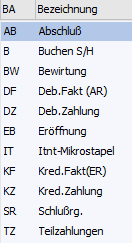
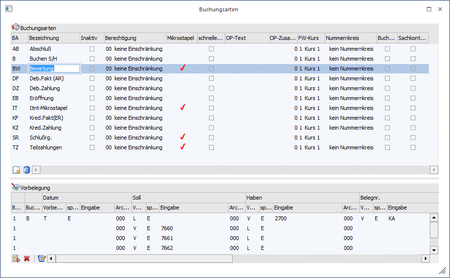
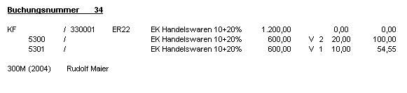
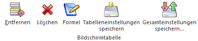
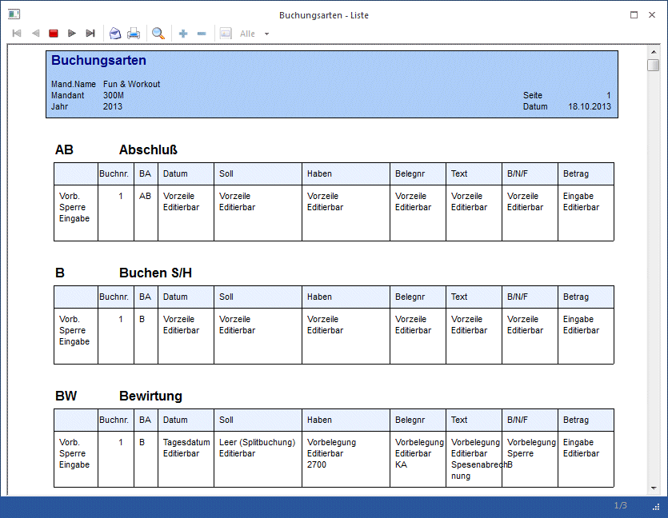

Die Buchungsarten können frei definiert werden (z.B. ist ein Anwender jahrelang gewohnt gewesen, Ausgangsrechnungen mit dem Schlüssel "AR" zu buchen - dann kann die Buchungsart AR angelegt werden - die intern natürlich wiederum auf den Buchungsschlüssel DF zugreift. Damit ist gewährleistet, dass alles geprüft und durchgeführt wird, was beim Buchen einer AR (oder DF) erforderlich ist (also z.B. dass im Soll der Debitor eingegeben werden muss, dass eine OP erstellt wird…). Um Buchungsabläufe zu automatisieren (z. B. Verbuchung von Anzahlungsrechnungen) können Buchungsarten für die Verwendung von Mikrostapeln vorbelegt werden. In einem Mikrostapel können mit einer eigenen Buchungsart mehrere Buchungszeilen mit hinterlegten Konten, Texten, Berechnungen usw. abgespeichert werden.
Im Menüpunkt
1 Stammdaten
1 Buchungsarten
haben Sie die Möglichkeit, firmenindividuelle Buchungsarten zu hinterlegen.
Die Anlage von unternehmensindividuellen weiteren Buchungsarten kann die Erfassung von Geschäftsfällen weitgehend erleichtern und beschleunigen (z.B. schnelle Kostenerfassung).
Folgende Buchungsarten sind im mitgelieferten Auslieferdatenstand enthalten:

Die Standard-Buchungsarten:
|
Kurzcode |
Bezeichnung |
|
AB |
Abschlussbuchung (13. Periode) |
|
B |
Soll-Haben-Buchung ohne OP-Verwaltung |
|
DF |
Debitorenfaktura mit OP-Verwaltung |
|
DZ |
Debitorenzahlung mit OP-Verwaltung |
|
EB |
Eröffnungsbuchung (0. Periode) |
|
KF |
Kreditorenfaktura mit OP-Verwaltung |
|
KZ |
Kreditorenzahlung mit OP-Verwaltung |

Buchungsarten können bis zu vier Stellen lang sein.
Folgende Eingabe-Felder stehen Ihnen beim Anlegen bzw. Bearbeiten einer Buchungsart zur Verfügung:
Buchungscode
Ø BA-Buchungsart
4stellig, alphanumerisch. Kennung der Buchungsart. Die Buchungsart wird bei der Erfassung von Geschäftsfällen durch Eingabe der Kennung Buchungsart aufgerufen.
Ø Bezeichnung
15stellig, alphanumerisch. Name der Buchungsart. Die Bezeichnung wird bei Aufruf der Buchungsart am Bildschirm angezeigt.
Ø Inaktiv
Eine Buchungsart auf Inaktiv zu setzen hat lediglich die Auswirkung, dass sie beim Reorganisieren gelöscht werden kann, wenn noch keine Buchung im Journal oder in einem Stapel vorhanden ist. (Dasselbe kann aber auch mit dem Button "Löschen" im Fenster "Buchungsarten" erreicht werden.) Nähere Informationen zum Reorganisieren entnehmen Sie bitte dem WinLine START-Handbuch.
Ø Berechtigung
Für jede Buchungsart kann ein Berechtigungsprofil vergeben werden. Wenn der Anwender eine Buchungsart aufruft, wird geprüft, ob der Anwender einer Benutzergruppe zugeordnet wurde, welche in dem jeweiligen Profil enthalten ist und ob somit eine Bearbeitung erlaubt wäre (nähere Informationen entnehmen Sie bitte dem WinLine ADMIN - Handbuch).
Hinweis
Benutzern des Typs "Administrator" oder mit der Administratorenberechtigung "Benutzeradministrator" steht in der Auswahlbox der Punkt ">> Neues Profil" zur Verfügung. Über die Anwahl dieses Eintrags kann in der Folge ein neues Berechtigungsprofil angelegt werden.
Ø Mikrostapel
Diese Checkbox wird automatisch gesetzt, wenn es sich um einen Mikrostapel handelt.
Über den Mikrostapel ist es nicht nur möglich, bestimmte Vorbelegungen oder Regeln für die einzelnen Eingabefelder der Buchungszeile zu erstellen, sondern es können Folgebuchungen innerhalb des Mikrostapels angesprochen und abgearbeitet werden, wobei im Betragsfeld der einzelnen Buchungszeilen Bezug auf die "Hauptbuchung" genommen werden kann. Für ganz "ausgefallene" bzw. anspruchsvolle Berechnungen kann der Betrag der Buchung auch über eine VBScript-Formel errechnet werden.
Ø Schnelle Kostenerfassung in Buchen (Dialog-Stapel):
Aktiv:
Das Schnellerfassungsfenster öffnet sich automatisch sofort nach Eingabe des mit einer Kostenart verknüpften Buchungskontos (die Verknüpfung wird hergestellt, indem im Kontenstamm im Feld Kostenart eine Kostenart eingetragen wird). Im Schnellerfassungsfenster kann pro Buchungszeile nur eine Kostenart, eine Kostenstelle und ein Kostenträger angesprochen werden.
Inaktiv:
Die Kostenaufteilungs-Tabelle öffnet sich automatisch nach Absetzen der FIBU-Journalzeile.
Bei Splitbuchungen sollte die Kostenerfassung nicht über die Kostenschnellerfassung erfolgen.
Ø OP-Text
Hier kann ein max. 10stelliger Text eingegeben werden, der das Feld OP-Text in der OP-Verwaltung vorbelegt.
Ø OP-Zusatzfeld-Nr.
Hier kann eine der dreißig Zusatzfeldnummern aus dem Debitorenstamm eingegeben werden. Diese Information wird dann ebenfalls in das Feld "OP-Text" des Offenen Posten-Satzes gestellt.
Achtung
Die Felder OP-Text und OP-Zusatzfeld-Nr. funktionieren nur gemeinsam. D.h. damit der OP-Text übernommen wird, muss eine Zusatzfeld-Nr. eingetragen werden und umgekehrt.
Ø FW-Kurs
Hier kann eine der sechs verschiedenen Fremdwährungskurse hinterlegt werden, der bei dieser Buchungsart verwendet werden soll.
Ø Nummernkreis
Auswahl ob bzw. welcher Nummernkreis pro Buchungsart verwendet werden soll.
Ø Buchungsetiketten drucken
Ist diese Checkbox aktiviert, so wird beim Absetzen einer Buchung (in den Buchungsfenstern) automatisch ein Buchungsetikett gedruckt. Standardmäßig ist das Formular für diese Buchungsetiketten so definiert, dass 1 Etikett (1 Buchung) pro Seite gedruckt wird (dieses Formular kann jedoch selbst gestaltet werden).

Ø Sachkonten-OP-Referenznr. mit Batchnummer vorbelegen
Wird diese Checkbox aktiviert, wird im Dialog-Stapel-Buchen bei Verwendung der Buchungsart die Batchnummer als Referenznummer für Sachkonten-OPs vorgeschlagen. Diese Referenznummer wird für alle Buchungen des Mikrostapels vorgeschlagen. Wird im Buchen keine Batchnummer eingetragen, bleibt die vorgeschlagene Referenznummer leer und muss manuell eingetragen werden.
Ø Buchungskreis
Jeder Buchungsart kann ein Buchungskreis zugeordnet werden. Der Buchungskreis wird dann automatisch beim Buchen vorgeschlagen. In der Auswahllistbox werden nur jene Buchungskreise angezeigt, für die der Benutzer die Berechtigung hat.
Vorbelegung
Um Buchungsarten mit einer Vorbelegung anzulegen, muss die Buchungsart im Fenster Buchungscode angewählt werden.
Ø Buch.Nr.
Die Nummerierung innerhalb der Vorbelegungszeilen wird vom System vorgeschlagen. Pro Buchungsart kann eine Vorbelegungszeile gespeichert werden.
Hinweis bei Anlage eines Mikrostapels: Nach einer Splitbuchung kann eine neue Buchung begonnen werden, in dem in einer neuen Zeile im Feld Buchungsnummer die +-Taste betätigt wird.
Ø Buchungsart
Bei mitgelieferten Buchungsarten aus dem Auslieferdatenstand wird die Buchungsart vorgeschlagen. Bei neu definierten Buchungsarten wählen Sie aus der Auswahlbox den gewünschten Buchungsschlüssel als Vorbelegung. Der Buchungsschlüssel (Buchungsart) steuert, welche Datengebiete durch die Buchung verändert werden, und bildet die Basis für die neue Buchungsart. Möglich sind:
B Sachbuchung ohne Offene Posten
DF Debitoren-Faktura = Sachbuchung + Debitoren-OP-Buchung
DZ Debitoren-Zahlung = Sachbuchung + Debitoren-OP-Buchung
KF Kreditoren-Faktura = Sachbuchung + Kreditoren-OP-Buchung
KZ Kreditoren-Zahlung= Sachbuchung + Kreditoren-OP-Buchung
EB Eröffnungsbuchung (Unterdrückung der Steuer-Berechnung, wird auf Auswertungen gesondert in Periode 0 als 13. Periode ausgewiesen)
AB Abschlussbuchung (in 13. Periode - Unterdrückung der Steuerberechnung, wird auf Auswertungen
gesondert als eigene Periode gerechnet.
In den folgenden Feldern stehen Ihnen weitere Auswahlboxen zur Verfügung:
Ø DATUM
Ø Vorbesetzung
ü E - Eingabe
Während des
Buchungsvorganges können alle Felder manuell bebucht werden.
ü V - Vorbelegung
Mit der
Einstellung Vorbelegung wird das Eingabefeld für die Eingabe aktiv.
ü T - Tagesdatum
Das Systemdatum
wird während des Buchungsvorgangs vorgeschlagen.
ü Z - Vorzeile
Mit dieser Option werden die Angaben aus der Vorzeile übernommen (Standardeinstellung)
Ø sperren
ü E - Editierbar
Sie können ein
Datum im Eingabefeld als Buchungsvorschlag hinterlegen. Falls gewünscht, kann es
aber während des Buchens noch editiert werden.
ü S - Sperre
Ein Datum kann fix
im Eingabefeld hinterlegt werden. Während des Buchens ist dieses nicht mehr
veränderbar.
Ø Eingabe
TT-MM-JJJJ
Wenn in der Buchungsart ein Datum hinterlegt wird, wird beim Erfassen einer Buchungszeile mit dieser Buchungsart automatisch dieses Datum vorgeschlagen.
Ø Archivschlagwort Datum
Bei Verwendung des Archivs kann über die Buchungsart bereits eine Beschlagwortung von Dokumenten hinterlegt werden.
Als "Archivschlagwort Datum" kann aus der Auswahllistbox ein Datumsschlagwort gewählt werden, mit dem jenes Dokument beschlagwortet wird, dass in der Buchungszeile angeführt wird.
Diese Beschlagwortung, bzw. das Hinterlegen eines Dokumentes in der Buchungszeile ist nur im Menüpunkt "Buchen/Dialog-Stapel" möglich!
Ø SOLL- / HABENKONTO
Ø Vorbesetzung
ü E - Eingabe
Während des
Buchungsvorganges können alle Felder manuell bebucht werden.
ü V - Vorbelegung
Mit der
Einstellung Vorbelegung wird das Eingabefeld für die Eingabe aktiv.
ü Z - Vorzeile
Mit dieser Option werden die Angaben aus der Vorzeile übernommen (Standardeinstellung)
Ø sperren
ü E - Editierbar
Sie können ein
Konto im Eingabefeld als Buchungsvorschlag hinterlegen. Falls gewünscht, kann es
aber während des Buchens noch editiert werden.
ü S - Sperre
Ein Konto kann fix
im Eingabefeld hinterlegt werden. Während des Buchens ist dieses nicht mehr
veränderbar ist.
Ø Eingabe
Eine Kontonummer kann manuell eingegeben werden oder über den Kontenmatchcode (F9 oder Lupe) gesucht werden.
ü Soll-Konto:
Wenn in der
Buchungsart ein Soll-Konto hinterlegt wird, wird beim Erfassen einer
Buchungszeile mit dieser Buchungsart automatisch dieses Konto vorgeschlagen.
ü Haben-Konto:
Wenn in der
Buchungsart ein Haben-Konto hinterlegt wird, wird beim Erfassen einer
Buchungszeile mit dieser Buchungsart automatisch dieses Konto vorgeschlagen.
Ø Archiv Soll / Archiv Haben
Bei Verwendung des Archivs kann über die Buchungsart bereits eine Beschlagwortung von Dokumenten hinterlegt werden.
Als Archivschlagwort "Soll" oder "Haben" kann aus der Auswahllistbox ein Schlagwort gewählt werden, mit dem jenes Dokument beschlagwortet wird, dass in der Buchungszeile angeführt wird.
Diese Beschlagwortung, bzw. das Hinterlegen eines Dokumentes in der Buchungszeile ist nur im Menüpunkt "Buchen/Dialog-Stapel" möglich!
Ø BELEGNR.
Ø Vorbesetzung
ü E - Eingabe
Während des
Buchungsvorganges können alle Felder manuell bebucht werden.
ü V - Vorbelegung
Mit der
Einstellung Vorbelegung wird das Eingabefeld für die Eingabe aktiv.
ü Z - Vorzeile
Mit dieser Option werden die Angaben aus der Vorzeile übernommen (Standardeinstellung)
Ø sperren
ü E - Editierbar
Sie können eine
Belegnr. im Eingabefeld als Buchungsvorschlag hinterlegen. Falls gewünscht, kann
diese aber während des Buchens noch editiert werden.
ü S - Sperre
Eine Belegnr. kann
fix im Eingabefeld hinterlegt werden. Während des Buchens ist diese nicht mehr
veränderbar.
Ø Eingabe
Belegnummer: Hier kann eine Belegnummer vorgesetzt werden, die dann beim Erfassen einer Buchungszeile mit dieser Buchungsart, automatisch vorgeschlagen wird, und die dann durch Drücken der +-Taste um 1 erhöht werden kann.
Ø Archiv Belegnummer
Bei Verwendung des Archivs kann über die Buchungsart bereits eine Beschlagwortung von Dokumenten hinterlegt werden.
Als Archivschlagwort "Belegnummer" kann aus der Auswahllistbox ein Schlagwort gewählt werden (z.B. 022-Fakturennummer), mit dem jenes Dokument beschlagwortet wird, dass in der Buchungszeile angeführt wird.
Diese Beschlagwortung, bzw. das Hinterlegen eines Dokumentes in der Buchungszeile ist nur im Menüpunkt "Buchen/Dialog-Stapel" möglich!
Ø TEXT
Ø Vorbesetzung
ü E - Eingabe
Während des
Buchungsvorganges können alle Felder manuell bebucht werden.
ü V - Vorbelegung
Mit der
Einstellung Vorbelegung wird das Eingabefeld für die Eingabe aktiv.
Hier steht die Möglichkeit zur Verfügung, den Buchungstext mit der Kontenbezeichnung vorzubelegen. Dazu muss der Platzhalter #NAMSOLL bzw. #NAMHABEN als Vorbelegung des Buchungstextes (bzw. eines Teiles davon) hier eingetragen werden.
ü Z - Vorzeile
Mit dieser Option werden die Angaben aus der Vorzeile übernommen (Standardeinstellung)
Ø sperren
ü E - Editierbar
Sie können einen
Text im Eingabefeld als Buchungsvorschlag hinterlegen. Falls gewünscht, kann
dieser aber während des Buchens noch editiert werden.
ü S - Sperre
Ein Text kann fix im
Eingabefeld hinterlegt werden. Während des Buchens ist dieser nicht mehr
veränderbar.
Ø Eingabe
20stellig, alphanumerisch
Ø Archiv Buchungstext
Bei Verwendung des Archivs kann über die Buchungsart bereits eine Beschlagwortung von Dokumenten hinterlegt werden.
Als Archivschlagwort "Buchungstext" kann aus der Auswahllistbox ein Schlagwort gewählt werden, mit dem jenes Dokument beschlagwortet wird, das in der Buchungszeile angeführt wird.
Diese Beschlagwortung, bzw. das Hinterlegen eines Dokumentes in der Buchungszeile ist nur im Menüpunkt "Buchen/Dialog-Stapel" möglich!
Ø BRUTTO / NETTO / FW Brutto / FW Netto
Ø Vorbesetzung
ü E - Eingabe
Während des
Buchungsvorganges können alle Felder manuell bebucht werden.
ü V - Vorbelegung
Mit der
Einstellung Vorbelegung wird das Eingabefeld für die Eingabe aktiv.
ü Z - Vorzeile
Mit dieser Option werden die Angaben aus der Vorzeile übernommen (Standardeinstellung)
Ø sperren
ü E - Editierbar
Sie können
B/N/F. im Eingabefeld als Buchungsvorschlag hinterlegen. Falls gewünscht, kann
dies aber während des Buchens noch editiert werden.
ü S - Sperre
Eine Art der
Betragserfassung kann fix im Eingabefeld hinterlegt werden. Während des Buchens
ist diese nicht mehr veränderbar.
Ø Eingabe
ü B -> Bruttobetrag (=Betrag
inkl. MWSt.):
Der im Betragsfeld erfasste Betrag wird als Bruttobetrag
verarbeitet.
ü N -> Nettobetrag (=Betrag exkl.
MWSt.):
Der im Betragsfeld erfasste Betrag wird als Nettobetrag
verarbeitet.
ü FB -> Fremdwährung
Bruttobetrag:
Es geht das Fremdwährungsfenster auf, in dem der
Fremdwährungsbetrag als Bruttobetrag (d.h. inkl. MWSt.) eingegeben werden
kann.
ü FN -> Fremdwährung Netto:
Es geht das Fremdwährungsfenster auf, in dem der Fremdwährungsbetrag als
Nettobetrag (d.h. exkl. MWSt.) eingegeben werden kann.
Ø BETRAG
Hier kann - ab der zweiten Zeile im Mikrostapel - der Betrag mittels verschiedener Anweisungen aufgrund der Betragseingabe in der ersten Zeile des Mikrostapels errechnet werden. Die Möglichkeiten sind:
ü E -> Eingabe
Der Betrag kann
manuell eingegeben werden
ü B -> Bruttobetrag
Es wird
der Bruttobetrag der ersten Zeile des Stapels vorgeschlagen
ü N -> Nettobetrag
Es wird der
Nettobetrag der ersten Zeile des Stapels vorgeschlagen
ü S -> Steuerbetrag
Es wird
der Steuerbetrag des Stapels vorgeschlagen
ü R -> Betrag rechnen
Der
Betrag kann aus dem Betrag der ersten Zeile des Stapels errechnet werden. Mit
dem Symbol "B" kann der Betrag abgerufen werden - und mit beliebigen
Rechenoperationen weiterbearbeitet werden. Z.B. wenn 20% des Bruttobetrages
eingestellt werden sollen, würde die Formel lauten:
"B*0.20"
ü F -> Formel
Es öffnet sich
automatisch ein Fenster, in dem eine VB-Script-Formel eingegeben werden kann,
mit der der Betrag beliebig errechnet werden kann.
Für die Berechnungen in der Formel stehen - zusätzlich zu den VB-Script-Befehlen - noch folgende Funktionen zur Verfügung:
|
Funktion |
Beschreibung |
|
Credit |
Haben-Konto |
|
CreditMainline |
Haben-Konto der Hauptzeile |
|
Date |
Buchungsdatum |
|
DateMainline |
Datum der Hauptzeile |
|
Debit |
Soll-Konto |
|
DebitMainline |
Soll-Konto der Hauptzeile |
|
Deductiontypes |
Variablen der Abzugsarten-Tabelle (für Italien) |
|
FC |
Fremdwährung |
|
FCAmount |
Fremdwährungsbetrag |
|
FCAmountMainline |
Fremdwährungsbetrag der Hauptzeile |
|
FCMainline |
Fremdwährung der Hauptzeile |
|
ForeignCurrency |
Variablen des Fremdwährungsstammes |
|
ForeignCurrencyMainline |
Variablen des Fremdwährungsstammes für FW der Hauptzeile |
|
GNF |
Kennzeichen Brutto/Netto/Fremdwährung |
|
GNFMainline |
Kennzeichen Brutto/Netto/Fremdwährung der Hauptzeile |
|
GrossAmountMainline |
Bruttobetrag der Hauptzeile |
|
Journal |
Variablen der Journalzeile der Faktura (nur für Zahlungen) |
|
NetAmountMainline |
Nettobetrag der Hauptzeile |
|
OIPayments |
Variablen der Zahlungstabelle |
|
OIPosting |
Variablen der Fakturentabelle |
|
TaxAmountMainline |
Steuerbetrag der Hauptzeile |
|
Taxline |
Steuerzeile |
|
TaxlineMainline |
Steuerzeile der Hauptzeile |
|
Taxrate |
Steuersatz |
|
Taxrates |
Variablen des Unternehmensstammes |
|
Text |
Buchungstext |
|
TextMainline |
Buchungstext der Hauptzeile |
|
VoucherNo |
Belegnummer |
|
VoucherNoMainline |
Belegnummer der Hauptzeile |
Ø Archiv Betrag
Bei Verwendung des Archivs kann über die Buchungsart bereits eine Beschlagwortung von Dokumenten hinterlegt werden.
Als Archivschlagwort "Betrag" kann aus der Auswahllistbox ein Schlagwort (hier stehen nur "Betrags-Schlagwörter" zur Verfügung) gewählt werden, mit dem jenes Dokument beschlagwortet wird, dass in der Buchungszeile angeführt wird.
Ø Steuerbetrag
Für jede Buchungsart bzw. für jede Zeile eines Mikrostapels kann festgelegt werden, ob der Steuerbetrag
- gerechnet werden soll,
- dem Buchungsbetrag entsprechen soll (für direkte Buchungen auf ein Steuerkonto)
- auf 0 gesetzt werden soll oder
- keine Steuer gebucht werden soll.
Diese Option steht für Standardbuchungsarten nicht zur Verfügung, kann also nur bei selbst definierten Buchungsarten gesetzt werden. Weiters kann sie nur für Zeilen mit Buchungsart "B" bzw. für Splitzeilen von anderen Buchungsarten verwendet werden.
Wird eine andere Option als "Steuerbetrag rechnen" gewählt, wird automatisch die BNF-Comboauswahl mit "Brutto" vorbelegt und kann danach nicht mehr geändert werden.
Wird die Option "Steuerbetrag = Buchungsbetrag" gewählt, so wird für jede Buchung mit Steuer (unabhängig davon, ob es sich um eine Erwerbsteuerzeile, eine teilweise nicht abziehbare Zeile, eine 0%-Zeile, usw. handelt) der gesamte Buchungsbetrag in das Feld Steuerbetrag übernommen.
Ø Skonto Vorbelegung
Beim Buchen einer DZ oder KZ mit Skonto gibt es die Möglichkeit, die Skontobeträge zu editieren. Dabei können bestimmte Voreinstellungen getroffen werden, die auch als eine Vorbelegung gespeichert werden kann (Details dazu siehe Kapitel Skonto editieren). In der Buchungsart kann nun - abhängig vom Buchungsschlüssel - diese Vorbelegung fix hinterlegt werden. Wird mit dieser Buchungsart eine Zahlung mit Skonto erfasst, dann werden diese Voreinstellungen automatisch geladen und zur Anwendung gebracht.
Buttons Tabellenbereich "Buchungsarten"
Mit den Buttons können verschiedene Aktionen durchgeführt werden. Nachfolgend finden Sie eine Beschreibung aller vorhandenen Buttons:
Ø OK
Mit dem OK-Button werden neu angelegte Buchungsarten gespeichert.
Ø Ende
Damit wird das Fenster geschlossen. Wurde bereits eine Buchungsart angelegt aber noch nicht gespeichert, erhalten Sie folgenden Warnhinweis vor Schließung des Fensters.
Ø Liste Bildschirm
Es kann eine Übersichtsliste der angelegten Buchungsarten mit den entsprechenden Vorbelegungen auf den Bildschirm ausgegeben werden.
Ø Liste Drucker
Es kann eine Übersichtsliste der angelegten Buchungsarten mit den entsprechenden Vorbelegungen auf den Drucker ausgegeben werden.
Ø Neu
Durch Anklicken des Neu-Buttons kann eine Zeile zur Neuanlage einer firmenindividuellen Buchungsart im Bereich des Buchungscodes aktiviert werden. Zusätzlich ist ein entsprechender Buchungsschlüssel in der Vorbelegung zu hinterlegen.
Ø Löschen
Mit dem Löschen-Button können firmenindividuell angelegte Buchungsarten komplett gelöscht werden.
Die Standard-Buchungsarten (siehe Tabelle oben) können nicht gelöscht werden.
Ø Tabelleneinstellungen speichern
Die Spalten einer Tabelle können grundsätzlich an beliebige Positionen verschoben, bzw. in der Breite entsprechend angepasst werden. Durch Anwahl des Buttons "Tabelleneinstellungen speichern" werden die Einstellungen benutzerspezifisch gespeichert und bei dem nächsten Aufruf des Programmpunktes wieder vorgeschlagen.
Ø Gesamteinstellungen speichern
Im Gegensatz zu "Tabelleneinstellungen speichern" können mit "Gesamteinstellungen speichern" mehrere Tabellenaufbauten gespeichert und nach Wunsch geladen werden. Zusätzlich werden Sonderfunktionen der Tabelle (z.B. "Spalte gruppieren") ebenfalls bei der Speicherung bedacht.
Tabellenbuttons "Vorbelegung"

Ø Entfernen
Mit diesem Button können Sie in der Tabelle Vorbelegung eine einzelne Zeile wieder löschen.
Ø Löschen
Dieser Button bewirkt, dass alle weiteren Zeilen in der Tabelle Vorbelegung bis auf die oberste Zeile gelöscht werden.
Ø Formel
Hier können Sie eigene Formeln mittels VB-Skript hinterlegen.
Ø Tabelleneinstellungen speichern
Die Spalten einer Tabelle können grundsätzlich an beliebige Positionen verschoben, bzw. in der Breite entsprechend angepasst werden. Durch Anwahl des Buttons "Tabelleneinstellungen speichern" werden die Einstellungen benutzerspezifisch gespeichert und bei dem nächsten Aufruf des Programmpunktes wieder vorgeschlagen.
Ø Gesamteinstellungen speichern
Im Gegensatz zu "Tabelleneinstellungen speichern" können mit "Gesamteinstellungen speichern" mehrere Tabellenaufbauten gespeichert und nach Wunsch geladen werden. Zusätzlich werden Sonderfunktionen der Tabelle (z.B. "Spalte gruppieren") ebenfalls bei der Speicherung bedacht.
